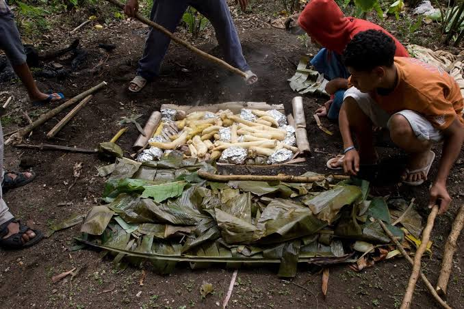

An umu is a traditional Tongan way of cooking food back home. We cook it underground using hto rocks. I remember we make umu almost every Sunday and i get to help my brothers with the cooking. It actually so fun and this si when family wokrs together through cooking. I also love the smell of the umu when the food is inside and is prepared to be taken out. It is the most exciting part of making umu.
We usually cook pork, chicken, taro, and lu. Everyone litterlly helps with preparing the food and covoring it with leaves. after a few hours, the food is then finally ready and everyone gather around to start getting it out to eat. It reminds me so much of how I grew up helping my siblings and bveng together with family.